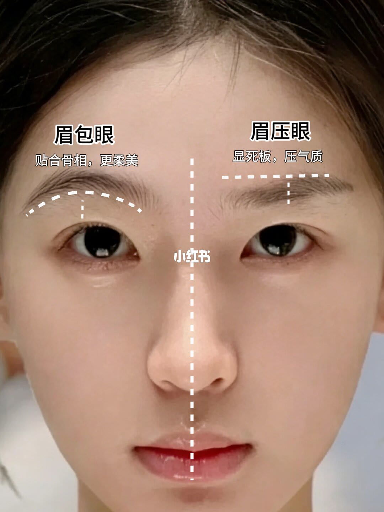
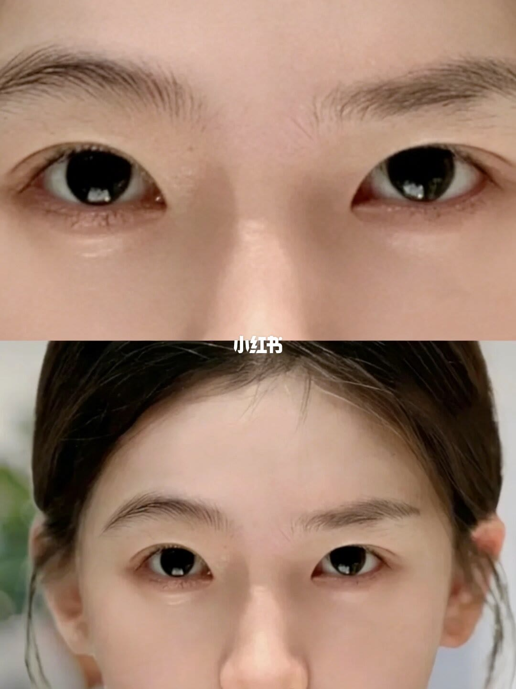

图文实录 · 小红书 · 北京野生眉丨大喵
“眉压眼”显凶没精神？3招轻松眉眼间距！
标题问的是眉眼太近会不会显凶、没精神，以及能不能用三招把间距拉开。两张图只把对照画出来了：第 1 页把同一张脸分成「眉包眼」和「眉压眼」。第 2 页是两张眉眼近景，没有可辨认的步骤文字。三招不在图上。
1/2
同一张脸：眉包眼对眉压眼

一张正脸被白色虚线从鼻梁中分成左右。左边大字「眉包眼」，下面写「贴合骨相，更柔美」。眉下缘跟着一条向下弯的弧形虚线，弧顶到上眼睑之间有一条短的竖虚线。右边大字「眉压眼」，下面写「显死板，压气质」。眉上方是一条接近水平的虚线，到眼睛的竖向距离看起来更短。
左右是同一张脸的对照，不是两个人。图上没有写「显凶」或「没精神」这六个字，右边用的原句是「显死板，压气质」。也没有画出黑眼球高度，没有写出要修哪里。
2/2
两张近景，没有步骤

上下叠了两张同一人的近景。上图只到双眼和完整眉毛，眉和上眼睑之间的空隙看起来比第 1 页右侧更开。下图稍远，露出饱满额头、发际碎发和部分耳朵，眉骨阴影平缓。两图中间有「小红书」水印。
这一页没有标题、没有虚线、没有「一个黑眼球」或三招的文字。眉色偏淡、弧度缓和，看得到；是不是刻意修过，无法确认。整张脸的其他比例也不在画面里。
汇总
图上是对照，三招在说明里
结论：图上能成立的只有一个观感对照。第 1 页把眉下缘贴着骨相走的弧，叫眉包眼，评语是更柔美；把眉眼挤短、眉形更平直的一侧，叫眉压眼，评语是显死板、压气质。第 2 页给的是间距看起来更开的近景，没有操作。
说明里另有一套图上没画的标准：眉毛下缘到睁眼上眼睑的距离，约等于一个黑眼球高度算舒展；小于这个高度叫眉压眼；眉包眼被写成眉下缘弧度贴住眼眶骨。改善写了三招：修掉眉毛下边缘的杂毛，把底线抬高；眉峰不要太尖；眉形偏柔和，眉尾不要高挑或下沉。这些句子只在说明里，两张图都没有。
边界：「显凶、没精神」是标题和说明的说法，第 1 页原句是「显死板，压气质」。这是妆面观感，不是面相或性格结论。第 2 页没有测量标注，不能从照片读出等于一个黑眼球。三招也没有前后对比图。